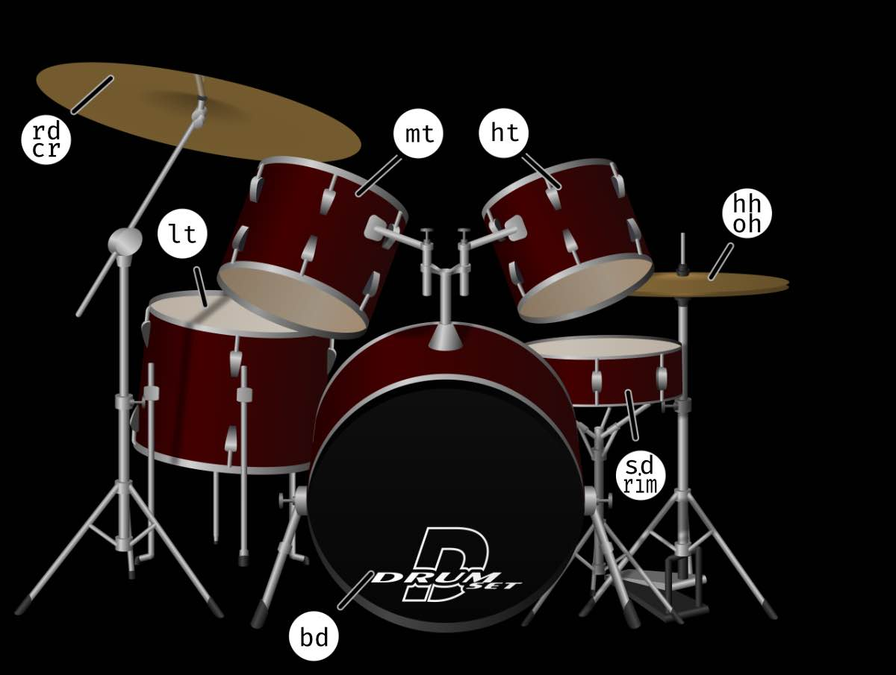

Strudel Shortcuts
Play: Ctrl-ENTER Stop: Ctrl-.Beats

// Set the time setcpm(120/4) // Four on the Floor $: sound("bd bd bd bd").bank('RolandTR909') // Tildes are RESTS ~ $: sound("~ sd ~ sd").bank('RolandTR909') // Putting sounds in brackets groups them together // Multipliers (*) can make things go faster $: sound("[hh hh hh hh]*4").bank('ViscoSpaceDrum') $: sound("hh hh hh hh*4").bank('ViscoSpaceDrum') $: sound("bd hh sd [ht mt lt]") Special Characters DRUM LIST [] - play all notes in a single beat bd = bass drum <> - Each Cycle hh = high hat ~ - rest oh = open hat * - speed up sd = snare drum / - slow down rd = ride cr = crash lt = low tom mt = med tom tb = tambourine Start of Line cb = cowbell $ - play in parallel threads ht = high tom _ - mute a line cp = clap BANK LIST AkaiLinn RhythmAce RolandTR808 RolandTR707 ViscoSpaceDrum